Release notes 1.1/fr
FreeCAD 1.1 est en cours de développement, il n'y a pas encore de date de sortie prévue.
Des fonctions sont manquantes? Faites en part dans le fil du forum Release notes for v1.1.
Voir Contribuer à FreeCAD pour savoir comment contribuer à FreeCAD.
Toutes les images de cette page doivent utiliser le suffixe _relnotes_1.1
FreeCAD 1.1 a été publié le JJ MM AA, téléchargez la depuis la page Téléchargement. Cette page liste toutes les nouvelles fonctions et les changements.
Les notes de versions plus anciennes de FreeCAD sont disponibles dans la liste des notes de versions.
L'endroit pour une image évocatrice sélectionnée par les administrateurs sur le forum des modèles des utilisateurs.
Général
- Amélioration de la prise en charge de Wayland. Pull request #21917, Pull request #23768 et Pull request #23946
Interface utilisateur
| 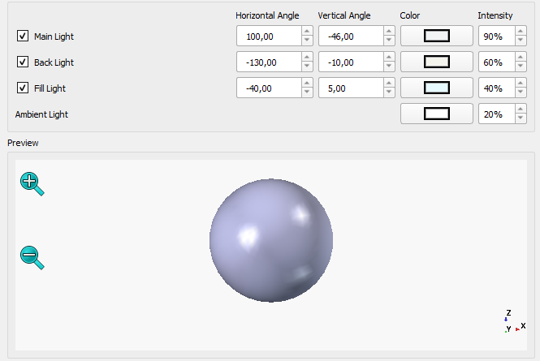 | L'éclairage par trois points a été ajouté pour améliorer le rendu des modèles 3D. |
{kind=link}

|
Une barre de recherche a été ajoutée aux |
| 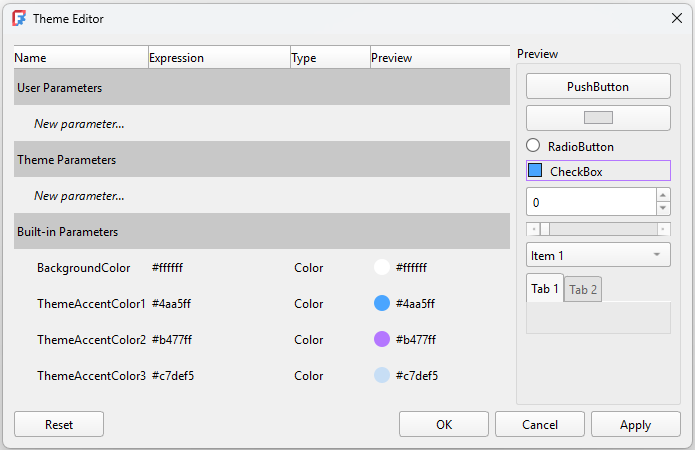 | Un nouvel éditeur de thème et un système de jetons de thème ont été mis en place pour permettre une meilleure personnalisation des feuilles de style. |

|
Une boîte de dialogue Ajouter une propriété consolidée et améliorée qui prend en charge les expressions, les énumérations et les unités. Un éditeur d'expressions amélioré avec une meilleure complétion des onglets, un meilleur comportement de redimensionnement et une saisie de VarSet. Pull request #22719, Pull request #23426, Pull request #22964 et Pull request #22944. |
{kind=link}
Autres améliorations de l'interface utilisateur
- Un raccourci par défaut pour les
 préférences a été ajouté. Pull request #15536
préférences a été ajouté. Pull request #15536 - La page des préférences de la zone de notification a été améliorée. Pull request #15207
- Les fonctions de sauvegarde automatique et de sélection additive ont été ajoutées à l'outil
 Mesurer. Pull request #17717
Mesurer. Pull request #17717 - Un paramètre de réglage fin Activer/désactiver la transparence a été ajouté pour permettre aux utilisateurs de modifier le niveau de transparence par défaut activé par l'outil
 Basculer la transparence. Pull request #18986
Basculer la transparence. Pull request #18986 - Une propriété de vue Show Plane a été ajoutée pour afficher le plan sur lequel l'objet 2D est basé. Pull request #18910
- Il est maintenant possible de changer la couleur des axes du système de coordonnées en utilisant les nouvelles préférences sous Édition → Préférences → Affichage → Vue 3D. Pull request #16995
- Une propriété de vue Show Placement a été ajoutée pour afficher le placement en tant que système de coordonnées à l'origine d'un objet. Pull request #19671
- Le style de navigation SolidWorks a été ajouté. Pull request #19568
- Les animations du cube de navigation effectuent des rotations en fonction du nombre de clics effectués sur les boutons plats. Pull request #19719
- De nouveaux styles d'orbite Trackball classique et Rounded Arcball ont été ajoutés. Rounded Arcball est maintenant le style par défaut, offrant une rotation pure de la caméra lorsque le curseur est proche des bords de l'écran. Pull request #20535
- La prise en charge des raccourcis dans la barre d'état a été ajoutée. Pull request #18961
- Toutes les propriétés booléennes dans la vue des propriétés utilisent maintenant une case à cocher au lieu d'une liste déroulante vrai/faux. Pull request #21555
- Le style de navigation Siemens NX a été ajouté. Pull request #21813
- S'il y a un objet actif dans l'arborescence, un
 groupe lui sera ajouté lors de sa création. Pull request #21902
groupe lui sera ajouté lors de sa création. Pull request #21902 - La commande
 Aligner sur la sélection utilise des rotations plus petites. Pull request #20088
Aligner sur la sélection utilise des rotations plus petites. Pull request #20088 - La commande Aligner sur la sélection utilise l'arête la plus longue d'une face pour aligner horizontalement ou verticalement. Pull request #20374
- La commande Aligner sur la sélection aligne désormais également la vue de la caméra sur les courbes planes et les faces non planes sélectionnées. Pull request #22066 et Pull request #22365
- Toutes les fenêtres MDI (y compris, par exemple, Spreadsheet et TechDraw) peuvent désormais être détachées et affichées en plein écran à l'aide de raccourcis clavier (« V », « U » ou « F11 ») ou de l'option de menu « Affichage → Fenêtre du document ». Pull request #22544
- La liste par défaut des ateliers est désormais plus courte, car les ateliers rarement utilisés sont désactivés par défaut. Cela inclut les ateliers Inspection, <none>, OpenSCAD, Robot et Test Framework. Pull request #23034
Noyau et API
Noyau

|
Les |
 Cliquez sur l'image si l'animation ne démarre pas. |
L'outil |
 Cliquez sur l'image si l'animation ne démarre pas. |
Des options avancées pour l'alignement spécifique des axes de la commande Déplacer vers un autre objet de l'outil de |
 Cliquez sur l'image si l'animation ne démarre pas. |
Mesure rapide affiche plus d'informations basées sur les éléments sélectionnés dans la barre d'état. Outre la longueur, l'angle, l'aire et le rayon, il affiche désormais le diamètre des éléments circulaires fermés et la distance entre les axes. Il fonctionne pour un ou plusieurs éléments sélectionnés. Il existe également une option de menu permettant de le désactiver. |
| 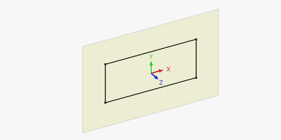 | Si l'éditeur de l' |
{kind=link}
| 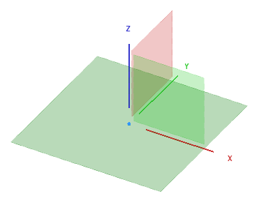 | Les plans d'origine sont désormais agrandis lorsque vous passez le curseur dessus. Il existe également une nouvelle préférence Taille du repère permettant de contrôler la taille des objets du repère. |
{kind=link}
| 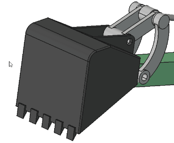 Cliquez sur l'image si l'animation ne démarre pas. |
L'outil Préciser une sélection a été ajouté sur la base de Pick Geometry de Realthunder. Il peut être activé à l'aide du raccourci clavier G, G, de l'option du menu contextuel ou (selon le style de navigation sélectionné) en maintenant le bouton gauche de la souris enfoncé. Elle active temporairement la transparence et affiche une liste de toutes les entités géométriques de différents types (objet, face, arête, sommet, autre) situées à proximité afin de permettre la sélection d'objets cachés/intérieurs lorsque vous survolez un modèle dans la vue 3D. |
{kind=link}
Autres améliorations du Core
- La prise en charge des fonctions booléennes a été ajoutée aux expressions. Pull request #22506
- Les structures par défaut des répertoires de données de l'utilisateur et de configuration ont été modifiées afin d'inclure le numéro de version de FreeCAD. Cela rend la mise à niveau moins risquée et permet d'utiliser en toute sécurité les anciennes versions de FreeCAD parallèlement à la nouvelle version. Au démarrage, une option permet désormais de migrer les anciennes configurations vers la nouvelle structure versionnée si une version précédente est détectée sur le système. Pull request #23321
- La possibilité de renommer les propriétés dynamiques a été ajoutée. Pull request #21444, Pull request #21975 et Pull request #21976.
API
Suppression d'API Python
API en Python modifiées
Nouvelles API en Python
- Une nouvelle classe statique
FreeCAD.ApplicationDirectoriesest disponible et fournit des fonctions liées à la nouvelle structure de répertoires versionnée.
Start
- La page de démarrage peut désormais afficher le contenu de dossiers supplémentaires spécifiés par l'utilisateur. Leurs chemins d'accès doivent être séparés par deux points-virgules (
;;). Pull request #19473, Pull request #19918 et Pull request #19948. - La section Exemples sur la page de démarrage peut être cachée avec un paramètre dans les préférences. Pull request #19376 et Pull request #19918.
- Les aperçus (vignettes) pour plus de formats de modèles 3D (tels que STEP et STL) sont maintenant affichés dans les sections Fichiers récents et Exemples de la page de démarrage si F3D viewer est installé et ajouté au chemin d'accès du système. Pull request #19489
Gestionnaire des extensions
- L'outil de mise à jour des dépendances de Python fonctionne maintenant correctement si FreeCAD est installé en tant que paquetage snap ou en tant qu'AppImage. Pull request #19384, Pull request #19766 et Pull request #19814.
- Le chemin d'accàs pour l'installation des modules Python dans l'outil de mise à jour des dépendances est maintenant affiché comme un chemin absolu pour une meilleure lisibilité. Il est également affiché correctement en fonction de la méthode d'installation de FreeCAD. Pull request #19828 et Pull request #19816.
- Le gestionnaire des extensions est lui-même une extension et peut être mis à jour en accédant à sa page dans la liste des extensions du gestionnaire des extensions.
- Les extensions peuvent désormais déclarer explicitement leur prise en charge de versions particulières de FreeCAD, et plusieurs versions et branches sont prises en charge pour chacune d'entre elles.
- Les dépendances Python utilisent désormais un fichier pip-constraints pour garantir une installation sans conflit.
Atelier Assembly
- L'outil
 Conteneur a été ajouté, ce qui permet d'ajouter facilement de nouveaux conteneurs à un assemblage. Pull request #17922
Conteneur a été ajouté, ce qui permet d'ajouter facilement de nouveaux conteneurs à un assemblage. Pull request #17922 - L'outil
 Simulation a été ajouté, ce qui permet d'ajouter des mouvements aux liaisons et de créer des animations. Pull request #16414
Simulation a été ajouté, ce qui permet d'ajouter des mouvements aux liaisons et de créer des animations. Pull request #16414 - La commande
 Nomenclature peut maintenant afficher les valeurs des propriétés données. Pull request #20732
Nomenclature peut maintenant afficher les valeurs des propriétés données. Pull request #20732
Autres améliorations d'Assembly
- Les nouvelles données de base peuvent être utilisées pour attacher des liaisons afin d'assembler des pièces multiples. Pull request #18332
Atelier BIM
| 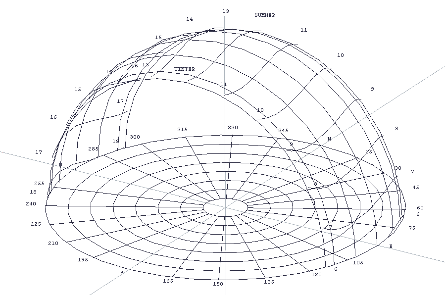 | La visualisation interactive de la position du soleil et des rayons a été ajoutée à |
{kind=link}
Autres améliorations de BIM
- Le panneau Gérer les vues BIM a été remanié et comporte désormais une section pour toutes les vues 2D. Pull request #15836
- Le panneau Gérer les vues BIM dispose désormais d'une fonction d'activation et de désactivation des objets dans la section de décomposition spatiale. Pull request #15836 et Pull request #21570
- La prise en charge de NativeIFC pour les objets 2D a été ajouté à BIM, permettant d'incorporer des objets 2D (lignes, textes, dimensions) dans des fichiers IFC, ainsi que d'ouvrir de tels fichiers à partir d'autres applications BIM. Pull request #16629
- La fenêtre de dialogue de
 Nomenclature prend désormais en charge les tableaux simples (c'est-à-dire non imbriqués). Cela permet aux tableaux réguliers et de liens (développés ou non) d'être traités pour d'autres calculs dans le rapport de la nomenclature BIM Schedule. Pull request #19219
Nomenclature prend désormais en charge les tableaux simples (c'est-à-dire non imbriqués). Cela permet aux tableaux réguliers et de liens (développés ou non) d'être traités pour d'autres calculs dans le rapport de la nomenclature BIM Schedule. Pull request #19219 - L'option Continuer est maintenant stockée séparément pour chaque commande de Draft et de BIM. Pull request #20748
- Lors de l'ajout de vues BIM à une page TechDraw, celles-ci respectent désormais l'échelle de la page, de sorte qu'elles ont une taille raisonnable. Pull request #20935
- Le niveau de zoom par défaut pour les nouveaux projets BIM a été modifié pour mieux correspondre aux grandeurs utilisées pour les modèles architecturaux. Pull request #20271
- Lors de la création d'un nouveau
 niveau, les objets sélectionnés dans l'arborescence sont désormais inclus dans le niveau. Pull request #20180
niveau, les objets sélectionnés dans l'arborescence sont désormais inclus dans le niveau. Pull request #20180 - Les
 espaces peuvent maintenant être créés à partir d'un seul objet (par exemple les faces intérieures d'un mur basé sur une base rectangulaire) Pull request #20158
espaces peuvent maintenant être créés à partir d'un seul objet (par exemple les faces intérieures d'un mur basé sur une base rectangulaire) Pull request #20158 - Les groupes standard de FreeCAD peuvent maintenant être ignorés lorsqu'un modèle est exporté en IFC. Ceci est contrôlé par une préférence et est la nouvelle valeur par défaut. Pull request #21583.
- Une nouvelle valeur « Sill » (Seuil) a été ajoutée aux objets
 Porte et
Porte et  Fenêtre afin de permettre la modification paramétrique de la hauteur du seuil. Pull request #21005
Fenêtre afin de permettre la modification paramétrique de la hauteur du seuil. Pull request #21005 - Une option permettant de précharger tous les IfcTypes pendant le processus d'importation/d'ouverture des fichiers IFC a été ajoutée. Pull request #21450
- La commande
 Plan de coupe a bénéficié de nombreuses corrections et améliorations en termes d'ergonomie. Le problème qui faisait basculer le sens de la coupe lors de la rotation du plan de coupe a notamment été corrigé, et la possibilité d'activer/désactiver la vue de coupe depuis le panneau des tâches a été ajoutée. Pull request #23826
Plan de coupe a bénéficié de nombreuses corrections et améliorations en termes d'ergonomie. Le problème qui faisait basculer le sens de la coupe lors de la rotation du plan de coupe a notamment été corrigé, et la possibilité d'activer/désactiver la vue de coupe depuis le panneau des tâches a été ajoutée. Pull request #23826 - Un double-clic sur un objet BIM pouvant être modifié devrait ouvrir son panneau de tâches, au lieu de modifier son libellé. Pull request #23805, Pull Request #23796 et Pull Request #24712
- La commande
 Supprimer permet désormais de supprimer des fenêtres et des portes des murs. Pull request #21561
Supprimer permet désormais de supprimer des fenêtres et des portes des murs. Pull request #21561 - Lors de la création d'une fenêtre personnalisée, la profondeur du cadre de la fenêtre et les propriétés associées sont décrites sans ambiguïté à l'utilisateur. Pull Request #21486
- Lors de l'exportation de modèles contenant un toit, celui-ci n'est plus supprimé de l'exportation. Pull Request #21409
- Un double-clic sur un niveau active désormais celui-ci et son plan de travail par défaut. Pull Request #21159
- Le raccourci W, P a été ajouté pour sélectionner le plan de travail. Pull Request #21157.
- La prise en charge des B-splines pour des structures, telle que la
 dalle, a été ajoutée. Pull Request #21134
dalle, a été ajoutée. Pull Request #21134 - Lors de la création d'un
 mur, la propriété DonnéesOffset du mur peut également être saisie. Pull Request #21042
mur, la propriété DonnéesOffset du mur peut également être saisie. Pull Request #21042 - Les commandes de création de vue 2D sont désormais regroupées pour une meilleure ergonomie. Pull Request #20941
{kind=link}
Atelier CAM
| 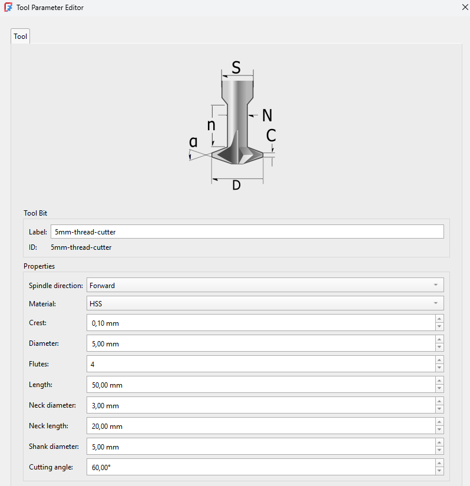 | La gestion des outils de CAM a été remplacée par l'intégration de Better Tool Library qui introduit un nouvel éditeur et un nouveau sélecteur d'outils. |
{kind=link}
| 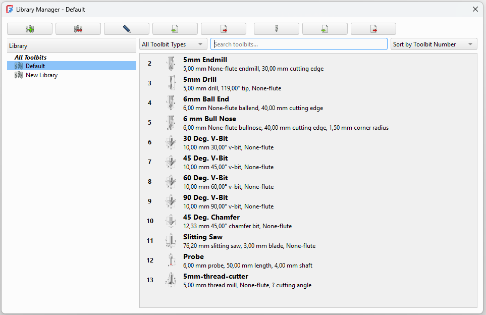 | Le gestionnaire des outils coupants a été remplacé et prend désormais en charge les fonctions copier-coller et glisser-déposer. |
{kind=link}
Autres améliorations de CAM
- L'outil expérimental
 CAM Parcours à partir de formes a été remplacé par Parcours à partir d'une forme avec le contrôleur d'outils qui est une version considérablement améliorée de cet outil basé sur une macro. Pull request #21108
CAM Parcours à partir de formes a été remplacé par Parcours à partir d'une forme avec le contrôleur d'outils qui est une version considérablement améliorée de cet outil basé sur une macro. Pull request #21108 - La finition adaptative et la détection des débords ont été implémentées, y compris la projection intelligente 2.5D du modèle et du brut pour toutes les opérations adaptativesainsi qu'une "finition adaptative" en un clic du modèle entier, un paramètre "Brut en Z à laisser" pour compléter le paramètre "finition par paliers" et un champ permettant d'ordonner les coupes par profondeur ou par zone. Pull request #18880
- Les opérations de taraudage G84/G74 ont été ajoutées à titre expérimental. Pull request #8069 et Pull request #24148
- La prise en charge multi-passe a été ajoutée pour les opérations de profilage. Pull request #17326
- La prise en charge des post-processeurs Snapmaker, Masso et Ondsel SVG a été ajoutée. Pull request #20154, Pull request #18845 et Pull request #21743
- Le
 nouveau simulateur de parcours a été amélioré, avec notamment deux boutons supplémentaires pour réinitialiser la caméra et réduire la vitesse. Pull request #21288, Pull request #21222 et plus encore.
nouveau simulateur de parcours a été amélioré, avec notamment deux boutons supplémentaires pour réinitialiser la caméra et réduire la vitesse. Pull request #21288, Pull request #21222 et plus encore. - L'opération Réseau est maintenant considérée comme obsolète car elle est désormais implémentée en tant que finition. Pull request #20321
- La prise en charge des opérations de profil à plusieurs passages a été implémentée. Pull request #17326
- La fonction Entrée/sortie a été améliorée. Pull request #22669
- Des éléments d'interface utilisateur ont été ajoutés pour permettre la visualisation et la modification des paramètres du contrôleur d'outils à partir du panneau des tâches de l'opération. Pull request #23180
Atelier Draft
- Les objets comportant deux flèches peuvent désormais avoir des flèches de début et de fin différentes. La taille des flèches de début et de fin d'un objet peut également être différente. Pull request #11941
- La commande
 Draft Éditer peut désormais également gérer les étiquettes de Draft. Pull request #13445
Draft Éditer peut désormais également gérer les étiquettes de Draft. Pull request #13445 - La prise en charge des chemins d'accès relatifs aux fichiers a été ajoutée aux
 formes à partir d'un texte et aux
formes à partir d'un texte et aux  hachures. Pull request #17819 et Pull request #23294
hachures. Pull request #17819 et Pull request #23294 - La gestion des liens dans TechDraw Vue d'un objet Draft a été corrigée. Pull request #18175 et Pull request #19296
- Le mode d'extrusion de la commande
 Ajuster ou prolonger a été rendu conscient des liens. Il peut maintenant gérer des faces appartenant à des liens et des objets dans des conteneurs liés. Et le point qui définit l'extrusion peut être coplanaire avec la face. Pull request #18314 et Pull request #18320
Ajuster ou prolonger a été rendu conscient des liens. Il peut maintenant gérer des faces appartenant à des liens et des objets dans des conteneurs liés. Et le point qui définit l'extrusion peut être coplanaire avec la face. Pull request #18314 et Pull request #18320 - Les commandes Déplacer, Pivoter et Échelle ont également été rendues sensibles aux liens. Pull request #18795
- Si une surface liée basée sur des faces connectées est extrudée, une tentative est faite pour fermer ses coins. La propriété Sew de l'objet doit être réglée sur true pour cela. Notez que le code peut échouer pour les formes complexes. Pull request #18901
- La commande
 Réseau selon une courbe a été améliorée avec plusieurs nouvelles propriétés. Il est maintenant possible d'inverser le réseau, de spécifier une unité d'espacement fixe et d'utiliser des motifs d'espacement. Pull request #19017
Réseau selon une courbe a été améliorée avec plusieurs nouvelles propriétés. Il est maintenant possible d'inverser le réseau, de spécifier une unité d'espacement fixe et d'utiliser des motifs d'espacement. Pull request #19017 - Les objets dans les calques peuvent maintenant avoir des priorités. Pull request #19207
- La commande Draft Ajouter au calque a été ajoutée. Elle permet de placer rapidement les objets dans le bon calque. Pull request #19427
- Le code de TechDraw sur lequel repose Draft Hachures a été révisé pour gérer également les lignes pointillées dans les motifs des hachures. Pull request #19458
- Les commandes Draft Désagréger et Draft Agréger ont été mises à jour. Les réseaux peuvent être déclassés (explosés). Les nouveaux objets sont placés dans le même conteneur (Group, Part) que les objets d'origine et reçoivent également les propriétés visuelles des objets d'origine. Pull request #19487 et Pull request #19685
- La commande
 Draft Polygone affiche maintenant un aperçu d'un polygone réel, au lieu d'un cercle. Pull request #21045
Draft Polygone affiche maintenant un aperçu d'un polygone réel, au lieu d'un cercle. Pull request #21045 - Une case à cocher Aligner sur la face a été ajoutée au panneau des tâches de la commande Draft Hachures. Pull request #21332
- Un raccourci D dans la commande pour recentrer le plan de travail pendant les commandes a été ajouté. Pull request #19728
- Pour simplifier la saisie par l'utilisateur des tableaux à axe unique, une option mode linéaire a été ajoutée au panneau des tâches de la commande
 Draft Réseau orthogonal. Pull request #21602
Draft Réseau orthogonal. Pull request #21602 - Des conseils ont été ajoutés dans la barre d'état pour les outils de création de Draft. Pull request #23244
{kind=link}
Autres améliorations de Draft
- La commande Congé fonctionne désormais sur les arêtes sélectionnées, au lieu de la première arête des objets sélectionnés. Pull request #17945 et Pull request #18150
- Les commandes Grouper automatiquement et Ajouter au groupe ont été améliorées. Les menus des deux commandes sont triés par ordre alphabétique. Dans le menu de la commande Groupement automatique, les calques sont séparés des groupes, et l'option Nouveau calque demande un nom et active le calque. Les actions des deux commandes ont été rendues annulables. Pull request #18172 et Pull request #19312
- La position du champ Multiplicateur d'échelle dans l'interface utilisateur a été améliorée (commandes Définir le style, Éditer le style des annotations et les Préférences). Pull request #18299
- La commande Draft <=> Esquisse applique désormais également des contraintes de coïncidence entre des arêtes provenant d'objets sources différents. Pull request #18805
- Les modes rayon, chanfrein et suppression de la commande Congé sont stockés. Pull request #19067
- Une option d'édition a été ajoutée pour les clones. Après avoir double-cliqué sur ces derniers dans la vue en arborescence, leur échelle peut être modifiée par un panneau de tâches. Pull request #19477
- Une face plane et une arête peuvent maintenant être sélectionnées pour la commande Sélectionner un plan . Pull request #19728
- Pour plus de clarté, la case à cocher « Remplir » dans le panneau des tâches de Draft Polyligne, par exemple, a été renommée « Créer une face ». Pull request #19738
- Les textes des dimensions nouvellement créées sont désormais orientés automatiquement par rapport au plan de travail en cours. Un paramètre de réglage fin est disponible pour désactiver ce comportement. Pull request #20072
- Aimantation Au plus proche n'a plus la priorité sur les autres aimantations. Les aimantations aux objets, tels que Aimantation Milieu et Aimantation Extrémité, à l'intérieur de la plage d'aimantation du curseur sont maintenant détectées. Pull request #20118
- Dans les préférences, une liste déroulante permettant de sélectionner le nom de la police pour les textes, les dimensions et les étiquettes a été introduite. Auparavant, le nom devait être saisi manuellement. Pull request #20400
- L'option Continuer est maintenant stockée séparément pour chaque commande de Draft et de BIM. Pour la commande Draft Dimension, l'ancienne option Continuer a été renommée Mode enchïnée pour plus de clarté, et une nouvelle option Continuer a été ajoutée. Pull request #20748
- La commande Draft Forme à partir d'un texte a fait l'objet de plusieurs améliorations. Le fichier de police n'est plus une préférence, c'est le dernier fichier sélectionné qui est stocké. Pour la valeur initiale du fichier de police, une tentative est faite pour obtenir un fichier approprié du système d'exploitation. Ceci a pour but d'aider les utilisateurs qui ne connaissent pas l'emplacement des fichiers de police. Le dernier texte saisi et la dernière hauteur sont également enregistrés. Une option Globale a été ajoutée au panneau des tâches. En décochant cette case, les coordonnées peuvent être spécifiées dans le système de coordonnées du plan de travail. Enfin, les fichiers de polices TrueType Collection (.ttc) peuvent désormais être sélectionnés, mais seule la première police d'un tel fichier peut être utilisée. Pull request #21004, Pull request #21054 et Pull request #21124
- L'objet de base pour Draft Polyligne, Draft B-spline et Draft Courbe de Bézier a été remplacé par l'objet Part::FeaturePython. Pull request #21636
- L'aimantation aux intersections détecte désormais également les intersections entre les faces et les arêtes. Pull request #23352
- L'option « Orientation du plan de travail » a été supprimée de la commande Draft Échelle car elle ne fonctionnait pas correctement. Pull request #23716
Atelier FEM
| 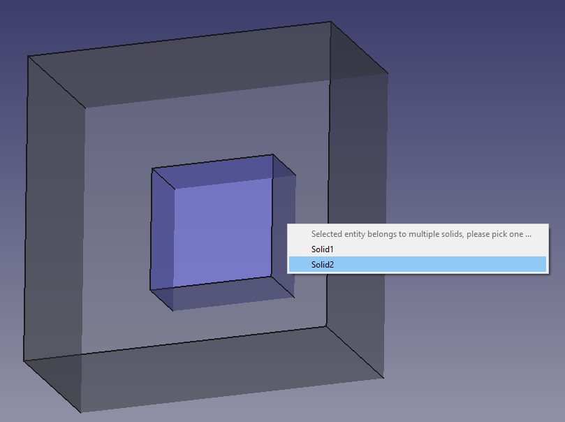 | Un menu contextuel a été ajouté pour permettre la sélection d'un solide approprié si la face sélectionnée du CompSolid appartient à deux solides. Il est ainsi plus facile de sélectionner des solides intérieurs, par exemple pour leur appliquer des matériaux. |
{kind=link}

|
La propriété ZRefine a été ajoutée à |
 Si l'animation ne démarre pas, cliquez sur l'image. |
Les |
| 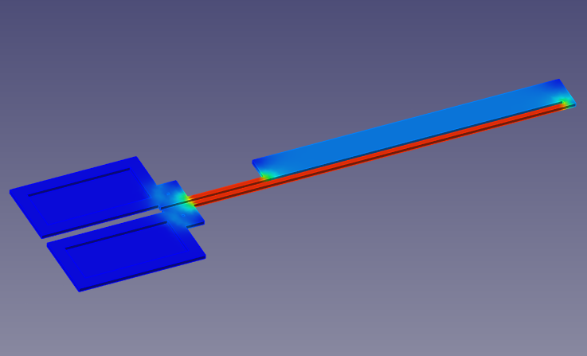 | La prise en charge du solveur de conduction de courant statique d'Elmer a été ajoutée. L'effet Joule peut également être calculé à l'aide de ce solveur. |
{kind=link}
{kind=link}
| 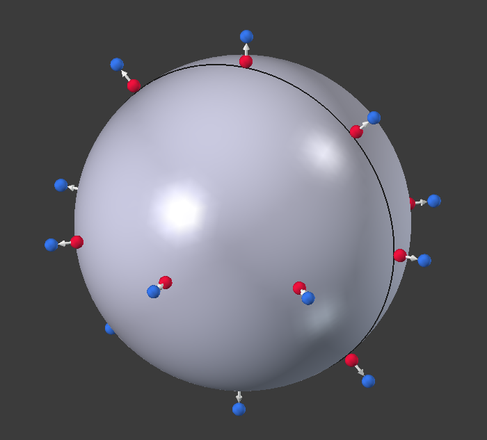 | La charge de l'outil |
{kind=link}
| 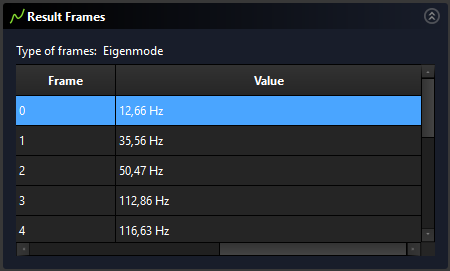 | Le |
{kind=link}
| 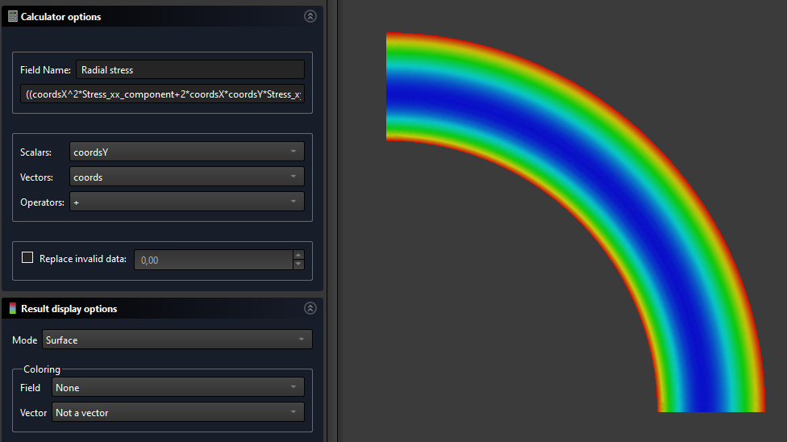 | 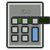 Champs personnalisés de résultats a été ajouté pour permettre la création de champs personnalisés en définissant une expression mathématique opérant sur les champs existants. |
{kind=link}
{kind=link}
| 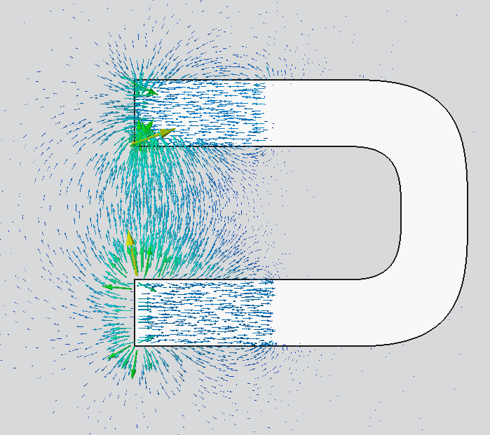 | Filtre par symboles a été ajouté avec un framework permettant de développer plus de filtres en Python pour VTK. |
{kind=link}
{kind=link}
| 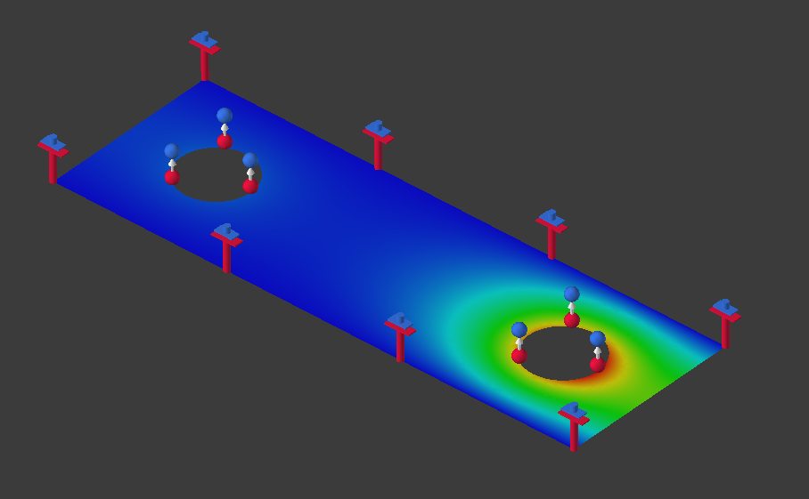 | Les analyses électrostatiques (y compris celles en 2D) sont maintenant supportées par le |
{kind=link}
| 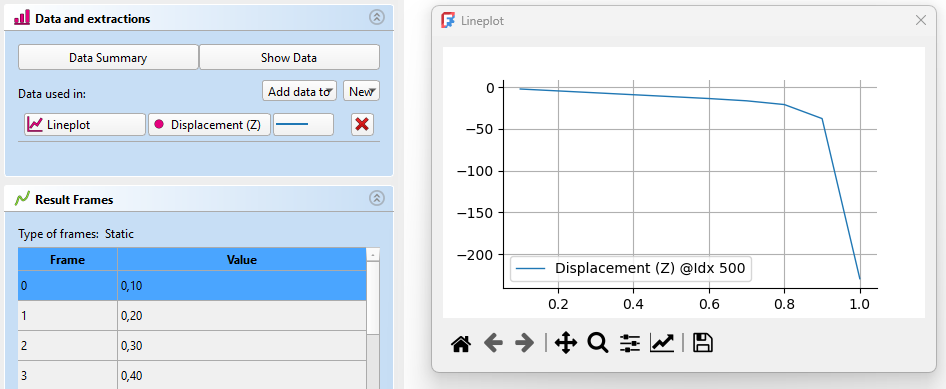 | Un jeu d'outils d'extraction de données a été ajouté aux pipelines de résultats. |
{kind=link}

|
Les charges de pression et de flux thermique ainsi que les contraintes de liaison et de contact peuvent désormais être appliquées aux arêtes dans les analyses 2D avec CalculiX. De même, les charges de source de chaleur du corps et de force centrifuge peuvent être appliquées aux faces des modèles 2D. |
Autres améliorations de FEM
- La verbosité des logs et le nombre de threads utilisés pour le maillage peuvent maintenant être réglés pour
 Gmsh et
Gmsh et  Netgen dans les préférences. Pull request #17699 et Pull request #18608
Netgen dans les préférences. Pull request #17699 et Pull request #18608 - La propriété DonnéesSecond Order Linear et la prise en charge du
 maillage plus fin localement, jusque là disponibles uniquement pour Gmsh, sont maintenant également disponibles pour la nouvelle implémentation de Netgen. Pull request #17170
maillage plus fin localement, jusque là disponibles uniquement pour Gmsh, sont maintenant également disponibles pour la nouvelle implémentation de Netgen. Pull request #17170 - Les types de sections de poutres-caissons et elliptiques ont été ajoutés à la commande
 Coupe transversale d'un élément 1D. Pull request #15843
Coupe transversale d'un élément 1D. Pull request #15843 - L'outil
 Purger les résultats supprime désormais tous les objets résultat et pas seulement ceux natifs de CalculiX. Pull request #18328
Purger les résultats supprime désormais tous les objets résultat et pas seulement ceux natifs de CalculiX. Pull request #18328 - La
 contrainte de liaison peut maintenant être appliquée également aux faces de coques. Pull request #18325
contrainte de liaison peut maintenant être appliquée également aux faces de coques. Pull request #18325 - Le format de sortie (binaire ou ASCII) et la sauvegarde des ID de géométrie peuvent maintenant être définis pour Elmer, de même dans les préférences. Pull request #17972
- Une option de lissage a été ajoutée au
 filtre par contours. Pull request #18088
filtre par contours. Pull request #18088 - Le paramètre BucklingAccuracy a été ajouté au
 solveur CalculiX. Il peut être nécessaire de capturer la première valeur propre dans certaines analyses de flambage linéaire. Pull request #18790
solveur CalculiX. Il peut être nécessaire de capturer la première valeur propre dans certaines analyses de flambage linéaire. Pull request #18790 - Maintenant tous les objets FEM pour lesquels la suppression a un sens peuvent être supprimés. Auparavant, seules les contraintes pouvaient être supprimées. Pull request #18636
- Les forces de contact sont désormais enregistrées dans le fichier ccx_dat_file lors des analyses CalculiX. Pull request #18840
- L'outil
 Matériau renforcé utilise désormais le
Matériau renforcé utilise désormais le  nouvel éditeur de matériaux. Pull request #18893
nouvel éditeur de matériaux. Pull request #18893 - La
 condition limite de potentiel électrostatique a été étendu pour prendre en charge également les conditions limites de type Neumann et prescrire la densité du flux électrique. Elle a maintenant un symbole aussi. Pull request #18514 et Pull request #19011
condition limite de potentiel électrostatique a été étendu pour prendre en charge également les conditions limites de type Neumann et prescrire la densité du flux électrique. Elle a maintenant un symbole aussi. Pull request #18514 et Pull request #19011 - La température de référence de l'expansion thermique peut maintenant être définie pour un
 matériau solide dans les analyses thermomécaniques avec CalculiX. Pull request #19285
matériau solide dans les analyses thermomécaniques avec CalculiX. Pull request #19285 - La fonction Python Fem.frdToVTK a été ajoutée pour permettre la conversion des fichiers de résultats frd de CalculiX au format VTK utilisé par ParaView. Pull request #19426
- La
 condition limite de densité de courant a été améliorée. Elle a maintenant deux modes (Personnalisé et Normal) et un symbole pour le mode Normal. Pull request #19930
condition limite de densité de courant a été améliorée. Elle a maintenant deux modes (Personnalisé et Normal) et un symbole pour le mode Normal. Pull request #19930 - Deux nouveaux
 exemples FEM ont été ajoutés : un pour la nouvelle équation de courant statique (effet Joule) et un pour la
exemples FEM ont été ajoutés : un pour la nouvelle équation de courant statique (effet Joule) et un pour la  contrainte du corps rigide. Pull request #20007 et Pull request #20011
contrainte du corps rigide. Pull request #20007 et Pull request #20011 - Le panneau de tâches de
 Charge de flux thermique a été amélioré : les boutons radio pour choisir le type de flux thermique ont été remplacés par une boîte combo. Pull request #20059
Charge de flux thermique a été amélioré : les boutons radio pour choisir le type de flux thermique ont été remplacés par une boîte combo. Pull request #20059 - Le panneau de tâches de
 Magnétisation a été amélioré. Pull request #20055
Magnétisation a été amélioré. Pull request #20055 - Le mode de sélection a été ajouté au sélecteur de référence géométrique dans les panneaux de tâches des équations d'Elmer. Pull request #20053
- La fonction Python renameArrays a été ajoutée pour renommer les champs sélectionnés du
 pipeline de résultats. Pull request #20411
pipeline de résultats. Pull request #20411 - Une préférence pour CalculiX nommée Objet résultat a été ajoutée. Si la case à cocher Pipeline seulement est activée, un objet solveur CalculiX juste remanié est ajouté au conteneur Analysis lors de l'utilisation de l'option Solveur CalculiX. Il a un panneau de tâches mis à jour, ne génère pas d'
 objets CCX_Results (seul l' objet pipeline resultats est créé) et sera développé plus tard. Pull request #20609
objets CCX_Results (seul l' objet pipeline resultats est créé) et sera développé plus tard. Pull request #20609 - La propriété Offset a été ajoutée à
 FEM Épaisseur d'un élément 2D, ce qui permet de décaler la coque dilatée par rapport au maillage réel. Pull request #22385
FEM Épaisseur d'un élément 2D, ce qui permet de décaler la coque dilatée par rapport au maillage réel. Pull request #22385 - La prise en charge du
 contact thermique avec CalculiX a été ajoutée via les propriétés Thermal Contact Conductance et Thermal Contact Conductance utilisées pour spécifier la conductance entre espace. Pull request #22121
contact thermique avec CalculiX a été ajoutée via les propriétés Thermal Contact Conductance et Thermal Contact Conductance utilisées pour spécifier la conductance entre espace. Pull request #22121 - La prise en charge des contacts durs et liés avec CalculiX a été ajoutée. Pull request #22513 et Pull request #23327
- La prise en charge du rayonnement des cavités avec CalculiX a été ajoutée. Pull request #22593
- La prise en charge des amplitudes (variation temporelle) pour les conditions limites et la plus part des charges mécaniques et thermiques avec CalculiX a été ajoutée. Il y a de nouvelles propriétés : Enable Amplitude et Amplitude Values. Pull request #22851
- La
 température initiale peut maintenant être appliquée à une région sélectionnée (via la propriété References) dans les analyses de CalculiX. Pull request #22864
température initiale peut maintenant être appliquée à une région sélectionnée (via la propriété References) dans les analyses de CalculiX. Pull request #22864 - La propriété Glue a été ajoutée au maillage de Netgen. Lorsqu'elle est activée, un maillage continu est créé (cette propriété est équivalente à Coherence Mesh de Gmsh). Pull request #23074
- La Priority par défaut des équations Elmer commence désormais à 255 et diminue à chaque équation ajoutée. De cette façon, les équations sont résolues dans l'ordre dans lequel elles ont été ajoutées à l'arborescence. Pull request #22999
- Les éléments de membrane et de treillis de CalculiX sont désormais pris en charge et remplacent respectivement les éléments de coque et d'élément 2D lorsque la nouvelle propriété ExcludeBendingStiffness du solveur CalculiX est activée. Pull request #22912 et Pull request #23224
- Les déplacements du point de référence du corps rigide sont désormais enregistrés sous format ccx_dat_file. Pull request #23199
- La température initiale peut désormais également être utilisée pour prescrire le champ de température dans une étape d'analyse statique (avec une amplitude facultative). Pull request #23277 et Pull request #23530
- Netgen peut désormais être installé de manière standard, comme indiqué sur sa page de téléchargement. Il suffit d'indiquer à FreeCAD l'exécutable Python approprié dans les préférences (par défaut, l'exécutable Python spécifié dans les préférences Python générales est utilisé). Pull request #23613
- Certaines préférences liées à l'exportation de maillages ont désormais de meilleurs paramètres par défaut. Plus précisément, les groupes de nœuds sont activés pour le maillage Gmsh et l'exportation vers des fichiers INP inclut par défaut uniquement les éléments FEM et les groupes. Pull request #23553
- Les propriétés du solveur CalculiX sont désormais regroupées et les propriétés d'incrémentation temporelle sont plus conviviales (noms améliorés, meilleures valeurs par défaut, passage facile entre l'incrémentation automatique et directe, et aucune nécessité d'activer une propriété supplémentaire pour définir une incrémentation non standard). Pull request #23494
- Il existe une nouvelle propriété Pastix Mixed Precision du solveur CalculiX. Elle est désactivée par défaut afin que la précision mixte ne soit pas utilisée pour le solveur matriciel PaStiX, afin d'éviter des problèmes liés à des résultats incorrects dans certaines analyses. Pull request #23539
- L'objet et le panneau de tâches du
 solveur Elmer ont été remaniés de manière similaire à ce qui avait été fait précédemment pour CalculiX. Il fonctionne désormais avec la nouvelle implémentation de Netgen. De plus, les fichiers ParaView PVD peuvent désormais être importés. Pull request #24912
solveur Elmer ont été remaniés de manière similaire à ce qui avait été fait précédemment pour CalculiX. Il fonctionne désormais avec la nouvelle implémentation de Netgen. De plus, les fichiers ParaView PVD peuvent désormais être importés. Pull request #24912 - Trois nouveaux exemples FEM ont été ajoutés : un pour l'électrostatique récemment implémenté avec le solveur CalculiX refactorisé, un pour les charges de pression implémentées sur les arêtes des modèles 2D et un pour la symétrie cyclique introduite dans FreeCAD 1.0. Pull request #25117, Pull request #25191 et Pull request #25268
Atelier Material
- Les matériaux peuvent maintenant être stockés dans des datastores externes. Pull request #21047
Autres améliorations de Material
- Plusieurs nouveaux matériaux dotés de propriétés physiques ont été ajoutés à la base de données des matériaux :
- Polycarbonate Pull request #19432
- PMMA Pull request #24006
- Homopolymère et copolymère POM Pull request #23820
- PEEK Pull request #23779
- Aluminium 7075-T6 Pull request #23976
- Mise à jour de l'aluminium 6061-T6 Pull request #23977
Atelier Part
Autres améliorations de Part
- L'outil
 Tolérance a été ajouté pour permettre la création de copies paramétriques des objets sélectionnés avec toutes les tolérances contenues définies à une valeur minimale donnée. De plus, l'outil
Tolérance a été ajouté pour permettre la création de copies paramétriques des objets sélectionnés avec toutes les tolérances contenues définies à une valeur minimale donnée. De plus, l'outil  Vérifier la géométrie inclut désormais des informations sur les tolérances dans l'onglet Contenu des formes. Pull request #17214
Vérifier la géométrie inclut désormais des informations sur les tolérances dans l'onglet Contenu des formes. Pull request #17214 - L'outil Vérifier la géométrie a maintenant des entrées de résultats pour les formes valides, montre les objets ignorés et génère des rapports dans la vue rapport. Pull request #17631
 Lissage et
Lissage et  Balayage créent maintenant des solides par défaut. Pull request #22098
Balayage créent maintenant des solides par défaut. Pull request #22098- Les outils
 Part Importation et
Part Importation et  Part Exportation redondants ont été supprimés du menu. Pull request #22116
Part Exportation redondants ont été supprimés du menu. Pull request #22116
Atelier PartDesign
| 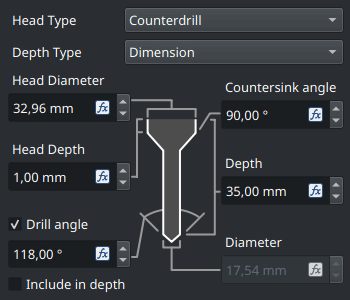 Cliquez sur l'image si l'animation ne démarre pas. |
Le panneau des tâches de l'outil Pull request #19052 et Pull request #19167 |
{kind=link}
| 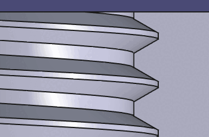 Cliquez sur l'image si l'animation ne démarre pas. |
Ajout de la prise en charge de la conicité du modèle et de plus de profils de filetage à l'outil |
{kind=link}
| 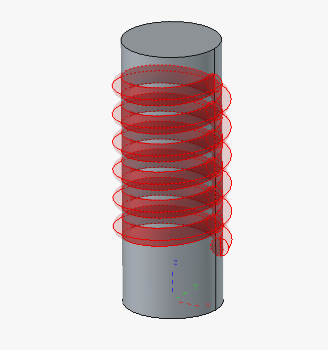 | Des aperçus transparents ont été ajoutés pour les fonctions additives et soustractives de PartDesign. Ils peuvent être désactivés temporairement à l'aide des cases à cocher du panneau des tâches ou par défaut dans les préférences. Il existe également une option permettant de mettre en évidence l'esquisse utilisée comme profil pour une opération de PartDesign. |
{kind=link}
| 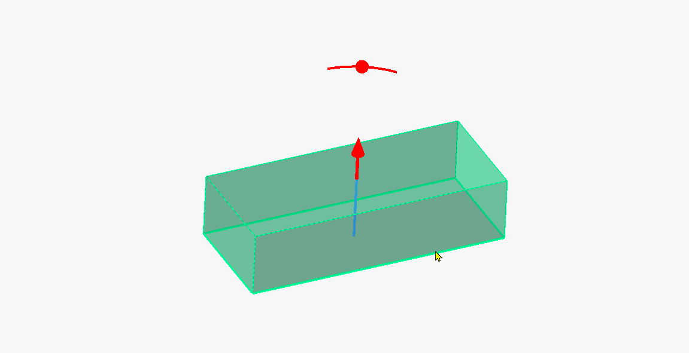 Cliquez sur l'image si l'animation ne démarre pas. |
Des curseurs interactifs de contrôle ont été ajoutés aux fonctions de PartDesign dans le cadre d'un projet Google Summer of Code. Ceux-ci permettent de manipuler les valeurs des fonctions en les faisant glisser dans la vue 3D. |
{kind=link}
Autres améliorations de PartDesign
- La fonction d'origine dans un corps de PartDesign utilise les nouveaux points de référence centraux. L'apparence a été modifiée et les plans s'agrandissent lors de la création d'une nouvelle esquisse. L'orientation étant erronée dans les anciennes versions de FreeCAD, les fichiers créés avec ces versions doivent être convertis à l'ouverture. Cela peut casser les fichiers qui font référence aux datums, et les fichiers convertis ou créés avec version 1.1 et suivantes seront cassés dans version 1.0 et précédentes. Pull request #18126
- La commande
 Basculer le figeage est désormais disponible dans PartDesign. Pull request #18373
Basculer le figeage est désormais disponible dans PartDesign. Pull request #18373 - Les performances des filetages modélisés à partir de l'outil
 Perçage ont été améliorées. Pull request #15744
Perçage ont été améliorées. Pull request #15744 - L'angle initial pour les filets coniques de l'outil Perçage est désormais automatiquement défini sur la valeur des normes ISO 7-1 et ASME B1.20.1. Pull request #15744
- L'outil Perçage peut maintenant créer des trous basés sur des points d'esquisse et des arcs en plus des cercles. Pull request #20583
- SwitchToTask, anciennement un paramètre du réglage fin, est désormais accessible depuis les préférences. Il peut être utilisé pour activer et désactiver le basculement automatique vers le panneau des tâches lorsque l'atelier PartDesign est activé. Pull request #22136
- Le panneau de tâches de la
 protrusion a été amélioré afin d'offrir davantage d'options pour le mode Deux dimensions. Pull request #21794
protrusion a été amélioré afin d'offrir davantage d'options pour le mode Deux dimensions. Pull request #21794 - La préférence permettant d'autoriser les composés (solides multiples) pour les corps est désormais activée par défaut et n'est plus considérée comme une fonction expérimentale. Pull request #23003
- Les outils de transformation peuvent désormais utiliser différents espacements. Pull request #22389
Atelier Sketcher
 Cliquez sur l'image si l'animation ne démarre pas. |
L'outil |

|
L'outil |
 Cliquez sur l'image si l'animation ne démarre pas. |
Les |
| 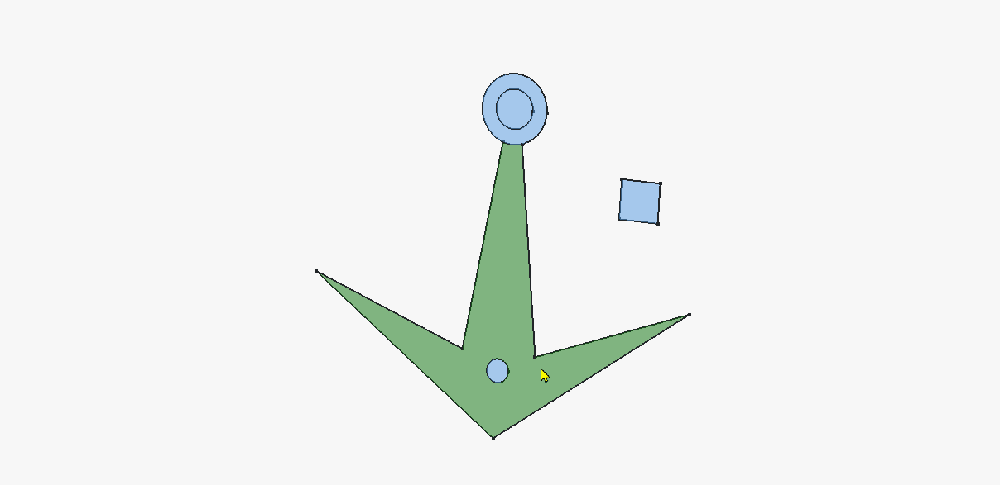 Cliquez sur l'image si l'animation ne démarre pas. |
La propriété Make Internals des esquisses est désormais pleinement fonctionnelle. Si elle est activée, elle affiche les faces des contours fermés et permet de les sélectionner pour les opérations de PartDesign. Ce paramètre est encore expérimental, mais il permet un flux de travail Esquisse maîtresse dans PartDesign. |
{kind=link}
Autres améliorations de Sketcher
- Il est maintenant possible d'utiliser directement une géométrie externe comme entrée pour des outils comme le décalage ou la transformation (réseau), pour les deux géométries externes construction et définition Pull request #17615.
- La géométrie externe (projetée ou intersectée) est maintenant par défaut une géométrie réelle (définissant) (qui n'a pas besoin d'être tracée comme dans la version 1.0 et les versions antérieures). Elle peut être transformée en géométrie de construction comme n'importe quelle autre géométrie Pull request #17736.
- Les axes de Sketcher sont désormais affichés avec une longueur infinie. Pull request #17312
- Les esquisses sont désormais classées par ordre alphabétique dans la boîte de dialogue de
 Ancrer une esquisse. Pull request #16518
Ancrer une esquisse. Pull request #16518 - Le déplacement de groupe a été ajouté, ce qui permet de déplacer toutes les entités géométriques sélectionnées. Pull request #18273
- Il y a une nouvelle préférence qui, si elle est cochée, rend la création de géométrie externe indépendante du mode de construction actuel. Elle est toujours créée en tant que géométrie de référence dans ce cas. Pull request #18697
- Une préférence a été ajoutée pour permettre la possibilité de regrouper les outils
 Ligne et
Ligne et  Polyligne. Pull request #20165
Polyligne. Pull request #20165 - Lors de la sélection d'une contrainte ou d'un élément géométrique dans l'esquisse, la liste correspondante du panneau des tâches défile désormais automatiquement jusqu'à cet objet. Pull request #18859 et Pull request #20866
- Des indications dans la barre d'état ont été ajoutées pour les outils de création, de contrainte, d'édition et de transformation de la géométrie de Sketcher. Pull request #21632, Pull request #21751, Pull request #21806 et Pull request #21840
- Les esquisses sont maintenant automatiquement mises à l'échelle après la saisie de la première dimension afin d'éviter de casser la forme lorsque la première dimension est beaucoup plus grande/petite que la taille actuelle de la géométrie. Pull request #21084
- Lors de la création d'une géométrie, le mouvement de la souris est ignoré si une valeur est saisie dans les paramètres d'affichage. La touche de tabulation permet de passer d'une zone de saisie à l'autre et la touche Entrée permet de confirmer. La suppression de la valeur d'une boîte de saisie d'un paramètre d'affichage permet à nouveau le déplacement de la souris pour la dimension. Pull request #20925
- Maintenant, toutes les parties des contraintes de dimension peuvent être sélectionnées, et pas seulement les étiquettes. Pull request #21920
- Il est désormais possible d'utiliser le raccourci Ctrl+A (ou l'option Sélectionner tout dans le menu Édition) pour sélectionner toutes les géométries dans l'esquisse. Pull request #23289
- La sélection par boîte de gauche à droite utilise désormais une couleur différente de celle utilisée de droite à gauche afin d'indiquer un comportement différent. Pull request #23261
- Il existe une nouvelle préférence pour la taille des symboles de contrainte. Pull request #23366
Atelier Spreadsheet
- Des raccourcis par défaut pour
 Texte en gras,
Texte en gras,  Texte en italique et
Texte en italique et  Texte en souligné ont été ajoutés. Pull request #15556
Texte en souligné ont été ajoutés. Pull request #15556 - Double-cliquer sur le séparateur dans l'en-tête redimensionne maintenant la colonne en fonction du contenu. Pull request #16296
- Le zoom a été ajouté à la feuille de calcul. Pull request #16130
- Des icônes ont été ajoutées aux entrées du menu contextuel. Pull request #22773
Atelier Surface
- Un panneau de tâches a été ajouté à l'outil
 Fusion de courbes. Pull request #21825
Fusion de courbes. Pull request #21825
Atelier TechDraw
- L'outil
 Cote de surface prend désormais correctement en compte les trous dans les faces. Pull request #17740
Cote de surface prend désormais correctement en compte les trous dans les faces. Pull request #17740 - La validation des formes est maintenant disponible et peut être activée dans les préférences. Pull request #18282
- La mise à l'échelle des symboles SVG a été corrigée. Pull request #18757
- Un nouveau spécificateur de format r a été ajouté. Il arrondit la valeur de la dimension au pas spécifié en décimal avant r. Par exemple, %0.5r (ou juste %.5r) arrondit à 0.5. Pull request #19393
- L'aimantation des surbrillances des vues détaillées au sommet le plus proche dans le processus de surbrillance par glisser-déposer de la boîte de dialogue des tâches a été ajouté. Pull request #22036
- Au lieu d'activer/désactiver les cadres d'affichage, ceux-ci s'affichent et se masquent désormais automatiquement lorsque le curseur passe sur la vue. Pull request #22869
- Les commandes du cercle cosmétique ont été renommées et regroupées pour plus de clarté. Pull request #22945
- Les outils obsolètes
 Cote à partir des points du repère et
Cote à partir des points du repère et  Lier une cote ont été supprimés. Pull request #21483
Lier une cote ont été supprimés. Pull request #21483 - Le nombre de décimales et les options de cote de référence ont été ajoutés au panneau de tâches
 Cote. Pull request #23501
Cote. Pull request #23501
Importer et exporter
- L'importateur DXF a été considérablement repensé au niveau de l'implémentation et de l'utilisation afin d'offrir une expérience utilisateur plus prévisible et cohérente. Pull Request #22251
- L'importateur DXF offre désormais une meilleure prise en charge des entités BLOCK et INSERT DXF. Pull Request #22045
- L'importateur DXF affiche désormais les statistiques d'importation après une importation. Pull Request #21985
- L'alignement des esquisses dans l'exportation SVG et l'ancienne exportation DXF ont été corrigés. Pull request #19765